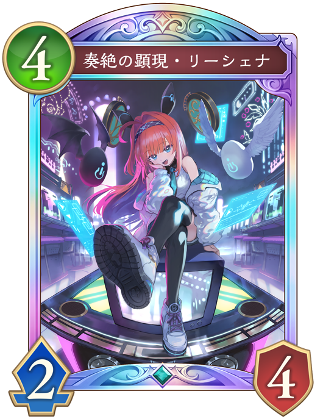
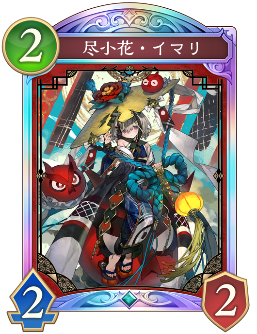

Q. 次のターンに予測できる相手の行動で危険なものは？

奏絶の顕現・リーシェナ
危険度：💀💀💀💀
ファンファーレで「奏絶の独唱」が手札に加わり、進化時に「新約白の章」が出される。 「新約白の章」が場に多く出されると回復とリーダーへの1点ダメージが多くなり相手のペースに持っていかれる。

尽小花イマリ
危険度：💀💀💀
進化している時に、1コストのスペルを使うと「イマリの小鬼」が出てきて盤面が簡単に返されてしまう。
 干絶の顕現・ギルネリーゼ
干絶の顕現・ギルネリーゼ
危険度：💀
最大3体取られるが、相手の場はそこまで強くないので危険度は低い。 回復要因を使ってくれるので、好都合。
 愛執のドールユーザー
愛執のドールユーザー
危険度：💀💀
ファンファーレと進化時で「人形」を手札に加える。 場のフォロワーが倒されてしまうが、相手の場はそこまで強くない。
予想の説明(クリックすると表示されるよ)
この状況では相手は先攻5ターン目で、進化ができるため「奏絶の顕現・リーシェナ」がプレイされる可能性が高い。
破壊ネメシスは「新約白の章」を場に多くあるほど、不利になるため、プレイしにくい盤面を作ることが大切である。